Na PeachCare, acreditamos que cada pet é único e especial, e por isso, merece todo o amor e cuidado do mundo!
Nossa missão é oferecer serviços veterinários de qualidade, com carinho e dedicação, garantindo que seu bichinho tenha uma vida longa, saudável e cheia de felicidade.
Somos uma equipe apaixonada por animais, comprometida em proporcionar um atendimento acolhedor, personalizado e cheio de respeito. Com nossos planos de assistência, buscamos facilitar o
acesso aos melhores cuidados para que tutores e pets possam viver momentos inesquecÃveis juntos.
🾠Por que escolher a PeachCare?
✔️ Atendimento com carinho e atenção
✔️ Planos acessÃveis para diferentes necessidades
✔️ Equipe experiente e apaixonada por pets
✔️ Cuidados preventivos para uma vida mais saudável
Seu pet sempre protegido, feliz e bem cuidado. 💕🐶🐱
Venha fazer parte da famÃlia PeachCare! 🍑🐾